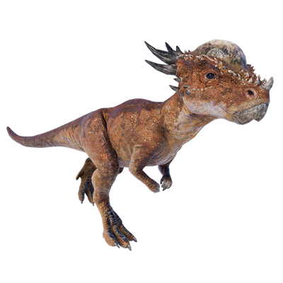

Useful Website
Stygimoloch is an herbivorous dinosaur from the pachycephalosaur family that lived in the western United States around 65-68m years ago. This genus can grow to over 3m in length and is easily recognisable thanks to the large bony horns on the back of its head, which it uses to defend itself from predators. Its name translates to ‘Styx devil’, a reference to the river that separates Earth and the Underworld in Greek mythology.
